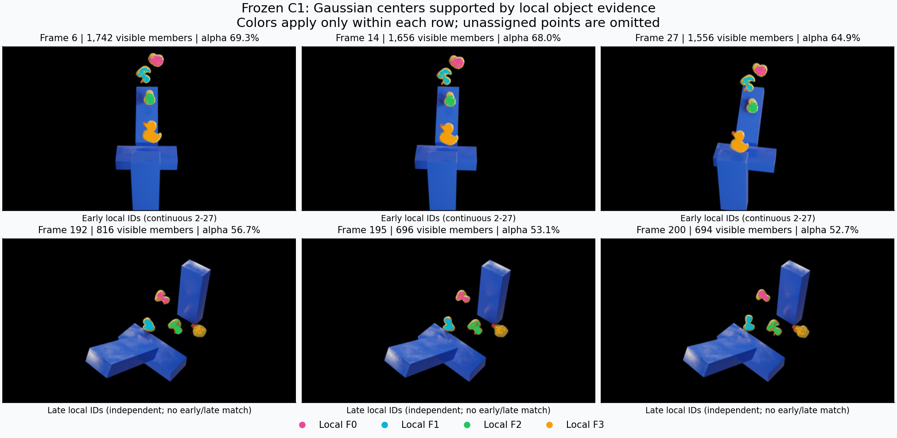
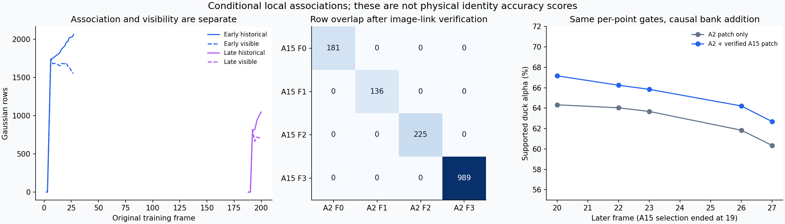

原2–27的四条连续可见图像对应经正反光流核验；A15四点库分别连至A2四个局部物体。不同点库不必是同一块表面。 晚期188–200独立编号，与早期相同颜色不表示同一只鸭子。图中仅绘出当前有贡献/中心/运动支持且已积累连续三观测证据的Gaussian中心。


原C1未重训；使用1600实际渲染完整贡献缓存、400图像掩膜和中心/流坐标。覆盖率不是物理身份准确率。未知、遮挡和跨物体冲突保留未知。 本诊断逐点规则与先前整库拒绝规则不同，不能直接将两轮覆盖率相减作为模型改进。